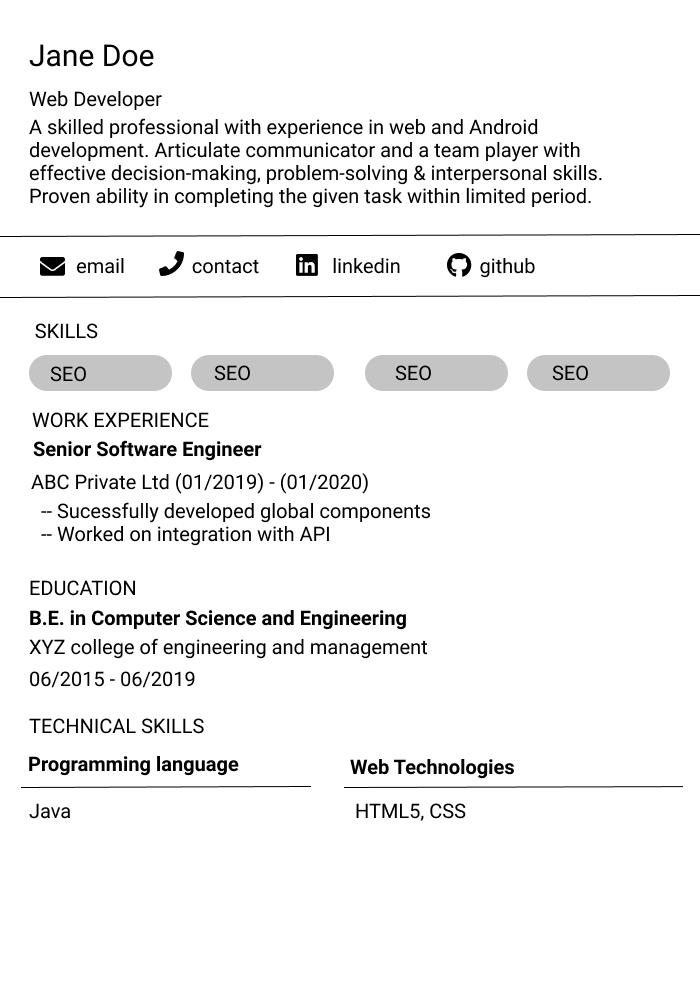
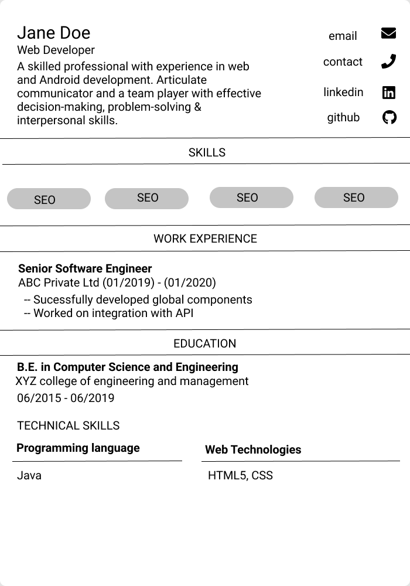
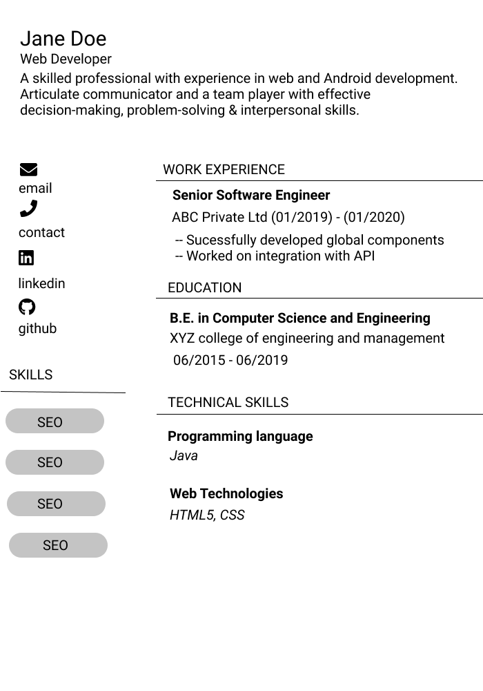
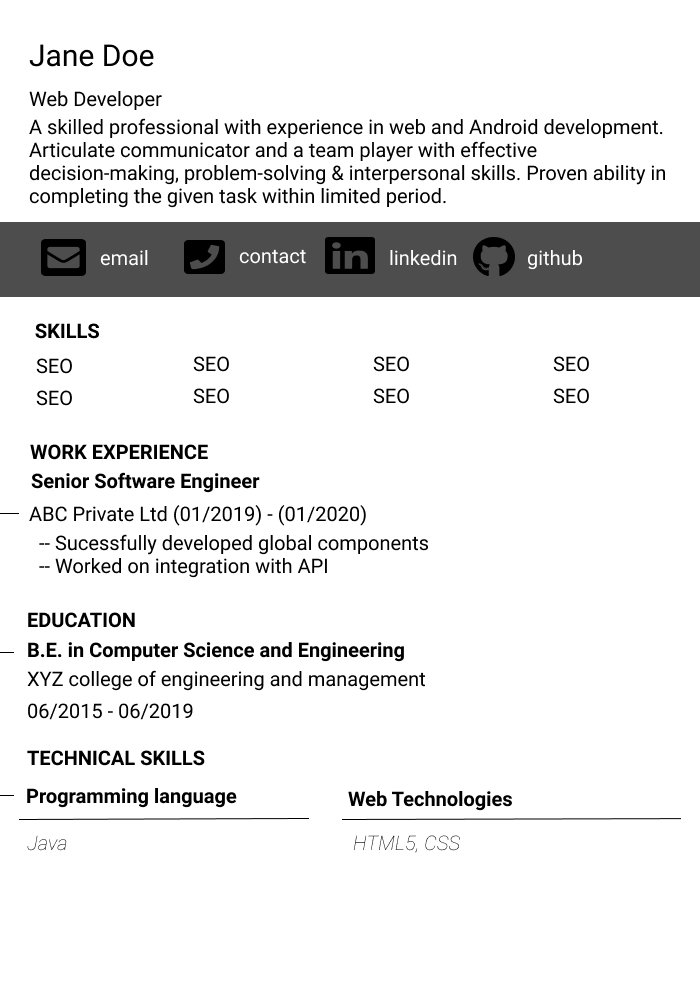

ResumesStudent/IntermediateCVsSeniorCover LettersAll levels of experience
Pick from Free Resume Templates
Pick one of our free resume templates, fill it out, and land that
dream job! Create and download your professional resume in less that
5 minutes.

Basic 1/4
Easily personalize this basic resume layout that can be completed in under ten minutes through our intuitive process.

College 2/4
An updated and contemporary version of the 21st-century college resume template, being an alternative to the old styles.

Functional 3/4
A functional resume template that works for all industries and will emphasize your strengths & work experience.

Simple 4/4
Simple resume layout for conservative industries, which is a minimalistic upgrade from the traditional resumes.